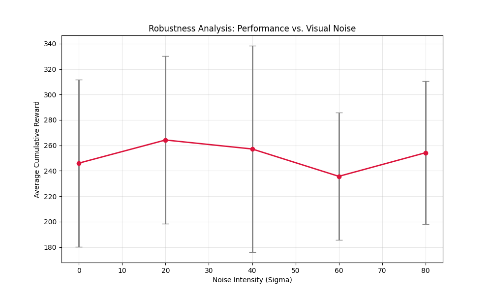
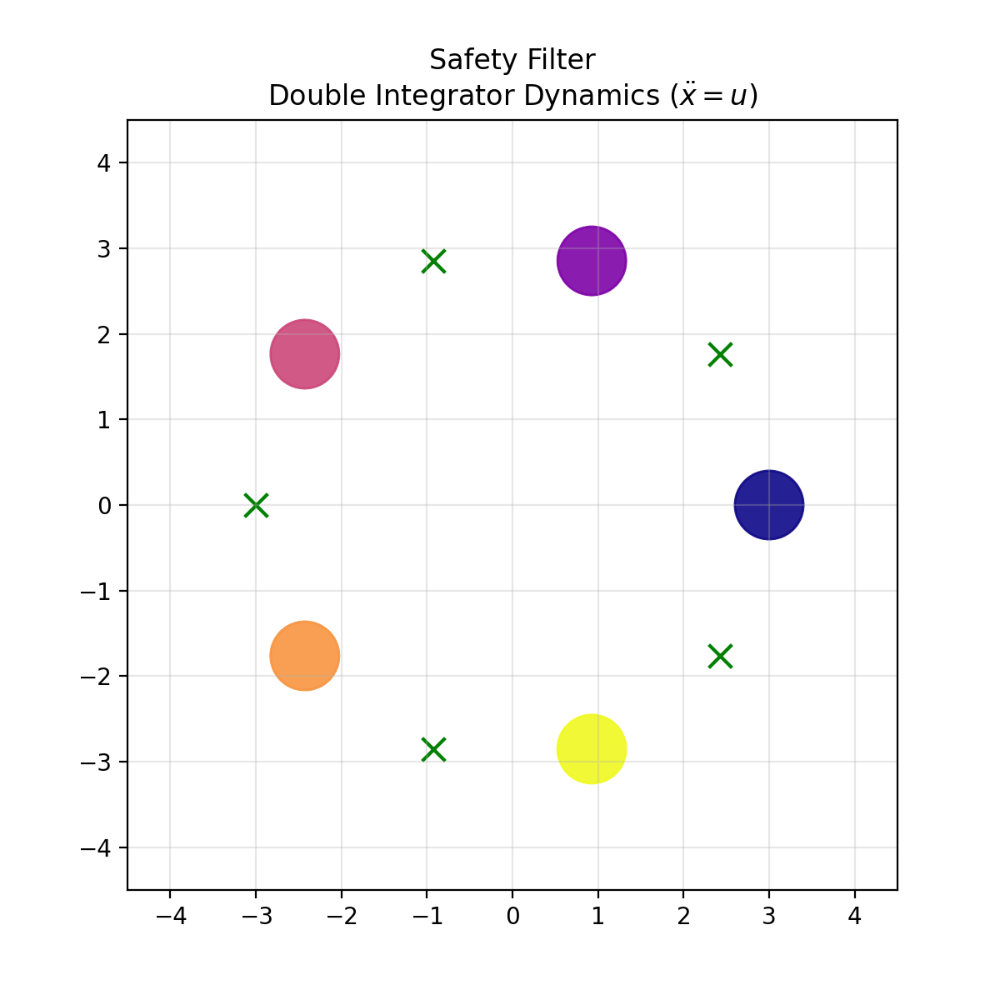
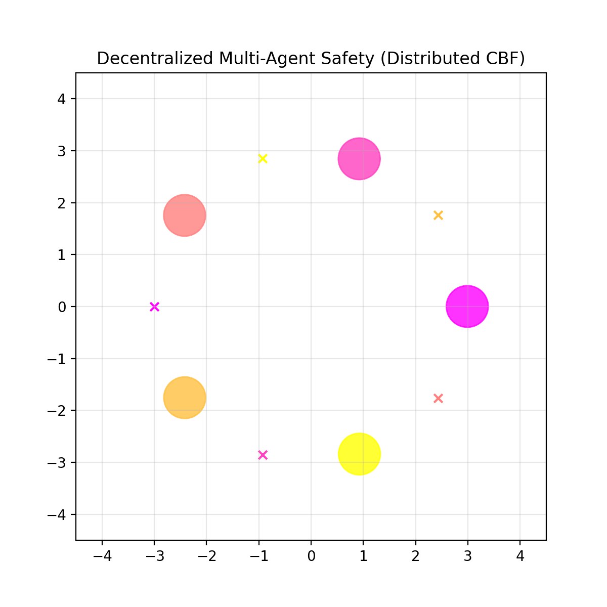
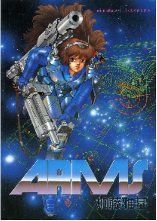
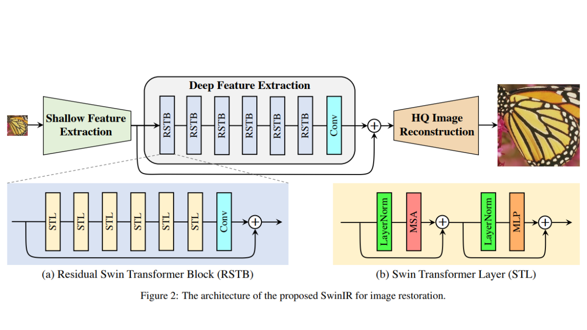
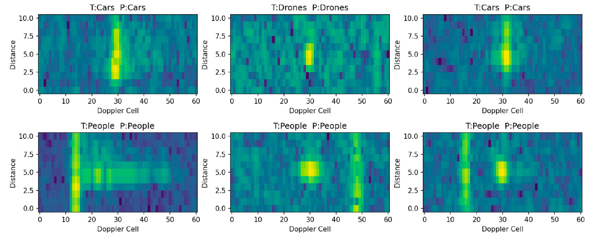

Selected hands-on projects and experiments, mostly around reinforcement learning,
multi-agent systems, neural fields, radar, and image restoration.

PPO-MAML for Meta-World Assembly-v3
Reinforcement Learning · Meta-RL · Robotic Manipulation
A compact PyTorch implementation that combines Model-Agnostic Meta-Learning (MAML)
with a PPO inner loop on the Meta-World ML1 assembly-v3 benchmark.
The goal is fast policy adaptation for a robotic arm under task variations.
- Single ~200-line script with fixed seeds, CSV logging, and GIF rollouts.
- Stable PPO updates using clipping, entropy regularization, and gradient clipping.
- Runs on CPU (MacBook Pro M2), easily portable to GPU.
GitHub repository →


Domain-Invariant Racer
Reinforcement Learning · Domain Randomization · Sim-to-Real
A PPO-based racing agent trained under heavy visual and physics randomization.
Instead of memorizing a single environment, the policy learns domain-invariant
representations that remain stable under changing textures, lighting, and noise.
The project focuses on robustness analysis and attention visualization to
understand which parts of the observation space the agent relies on as conditions degrade.
View code & README →


Safe Swarm Control with HOCBFs
Multi-Agent Systems · Control · Safety · Control Barrier Functions
A study of safety-critical control for multi-agent systems using
High-Order Control Barrier Functions (HOCBFs).
I compare centralized safety filtering for double-integrator dynamics
with decentralized, distributed CBF formulations. I used CVXPY for optimization.
The focus is on guaranteeing collision avoidance while minimally
modifying nominal control inputs, highlighting the trade-offs between
centralized and decentralized safety enforcement.
GitHub repository →

NeRF-inspired Seismic Subsurface Imaging
Neural Rendering · Seismic Imaging
An exploratory project on transferring Neural Radiance Fields (NeRF) ideas
from multi-view camera rendering to marine seismic acquisition.
Offset and azimuth are treated as view parameters in a NeRF-like formulation.
I also experimented with tokenizing seismic traces using time–frequency features
and vector quantization, aiming to learn CMP-level structure with transformer models
for faster and more data-efficient interpretation.



Image Super-Resolution with SwinIR
Image Restoration · Swin Transformer
Implemented and trained SwinIR for single-image super-resolution.
Trained on LSDIR and evaluated on Manga109 (×2),
achieving ~36.18 dB PSNR and outperforming a CNN baseline (RCAN).
View project report (PDF)

Doppler Radar Classification
Signal Processing · CNN · RAD-DAR
End-to-end Doppler radar pipeline to classify people, cars, and drones
from range–Doppler maps. Emphasis on clean preprocessing, balanced splits,
and interpretable baselines rather than large models.
The CNN baseline reaches ~93% test accuracy and is structured for
easy extension with alternative architectures.